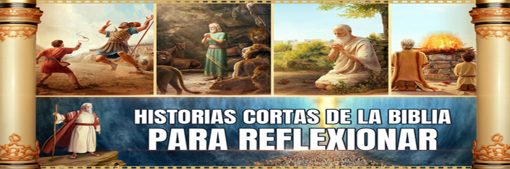

José: Del Pozo al Trono
(Génesis 37, 39 - 50)
Historia Bíblica
José El Arte de Ser Restaurado
José era el hijo amado de Jacob, favorecido y soñado, lo que despertó la envidia de sus hermanos (Génesis 37). Lo vendieron como esclavo; en Egipto sirvió en casa de Potifar, donde su fidelidad lo distinguió, pero una falsa acusación lo llevó a la cárcel (Génesis 39). En la prisión interpretó sueños y permaneció firme en su fe, hasta que, años después, interpretó el sueño de Faraón y fue elevado a segundo al mando de Egipto (Génesis 40–41). Durante la gran hambre, sus hermanos vinieron en busca de provisión; José, ya en posición de autoridad, los perdonó y proveyó, revelando que Dios había obrado para bien (Génesis 42–45).
Cada “capa” de su vida
Traición, esclavitud, calumnias, prisión— aportó experiencia y formación: la traición le enseñó humildad y dependencia; la esclavitud y la cárcel templaron su carácter y paciencia; los años de espera afinaron su interpretación y liderazgo.
Como una pintura, esas sombras fueron necesarias para que, al llegar la luz, la obra mostrara profundidad y propósito. Sin las capas oscuras, José no habría estado preparado para administrar salvación en masa: sus pruebas le dieron sabiduría, autoridad y compasión para proteger y sostener a otros.
La Lección
Las etapas dolorosas no son desperdicio; son parte del proceso formativo por el que Dios prepara a las personas para cumplir un propósito mayor.
TESTIMONIO PERSONAL
Mi Testimonio de Corrección y Gracia
Mi obra
Emprendí una obra que al principio parecía arruinada: trazos torcidos, colores desordenados y ganas de dejarla. Volví a trabajarla una y otra vez, corrigiendo capas hasta que finalmente encontró su ritmo y brillo.
Al leer Salmo 139:13
"Porque tú formaste mis entrañas; tú me hiciste en el vientre de mi madre"
Respuesta de Jesús
Recuerdo que, así como yo retoco mi obra, Dios me ha estado formando desde dentro; conoce cada imperfección y con paciencia transforma lo que soy en algo con propósito y belleza.